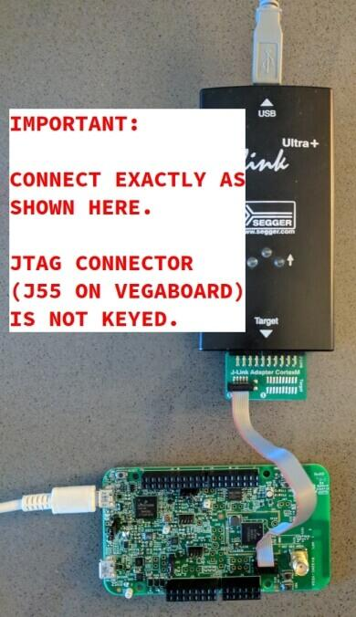

The VEGAboard contains the RV32M1 SoC, featuring two RISC-V CPUs,
on-die XIP flash, and a full complement of peripherals, including a
2.4 GHz multi-protocol radio. It also has built-in sensors and
Arduino-style expansion connectors.
The two RISC-V CPUs are named RI5CY and ZERO-RISCY, and are
respectively based on the PULP platform designs by the same names:
RI5CY and ZERO-RISCY. RI5CY is the “main” core; it has more
flash and RAM as well as a more powerful CPU design. ZERO-RISCY is a
“secondary” core. The main ZERO-RISCY use-case is as a wireless
coprocessor for applications running on RI5CY. The two cores can
communicate via shared memory and messaging peripherals.
Currently, Zephyr supports RI5CY with the rv32m1_vega/openisa_rv32m1/ri5cy board
configuration name, and ZERO_RISCY with the rv32m1_vega/openisa_rv32m1/zero_riscy board
configuration name.
Properties supporting Zephyr spi-nor flash driver (over the Zephyr SPI API) control of serial flash memories using the standard M25P80-based command set1
Properties supporting Zephyr spi-nor flash driver (over the Zephyr SPI API) control of serial flash memories using the standard M25P80-based command set1
This is an experimental feature supported on the Zephyr’s RI5CY
configuration, rv32m1_vega/openisa_rv32m1/ri5cy. It uses the Software Link Layer
framework by Nordic Semi to enable the on-SoC radio and transceiver for
implementing a software defined BLE controller. By using both the controller
and the host stack available in Zephyr, the following BLE samples can be used
with this board:
RV32M1 SoC pins are brought out to Arduino-style expansion connectors.
These are 2 pins wide each, adding an additional row of expansion pins
per header compared to the standard Arduino layout.
They are described in the tables in the following subsections. Since
pins are usually grouped by logical function in rows on these headers,
the odd- and even-numbered pins are listed in separate tables. The
“Port/bit” columns refer to the SoC PORT and GPIO peripheral
naming scheme, e.g. “E/13” means PORTE/GPIOE pin 13.
See the schematic and chip reference manual for details.
(Documentation is available from the OpenISA GitHub releases page.)
Note
Pins with peripheral functionality may also be muxed as GPIOs.
Top right expansion header (J1)
Odd/bottom pins:
Pin
Port/bit
Function
1
E/13
I2S_TX_BCLK
3
E/14
I2S_TX_FS
5
E/15
I2S_TXD
7
E/19
I2S_MCLK
9
E/16
I2S_RX_BCLK
11
E/21
SOF_OUT
13
E/17
I2S_RX_FS
15
E/18
I2S_RXD
Even/top pins:
Pin
Port/bit
Function
2
A/25
UART1_RX
4
A/26
UART1_TX
6
A/27
GPIO
8
B/13
PWM
10
B/14
GPIO
12
A/30
PWM
14
A/31
PWM/CMP
16
B/1
GPIO
Top left expansion header (J2)
Odd/bottom pins:
Pin
Port/bit
Function
1
D/5
FLEXIO_D25
3
D/4
FLEXIO_D24
5
D/3
FLEXIO_D23
7
D/2
FLEXIO_D22
9
D/1
FLEXIO_D21
11
D/0
FLEXIO_D20
13
C/30
FLEXIO_D19
15
C/29
FLEXIO_D18
17
C/28
FLEXIO_D17
19
B/29
FLEXIO_D16
Even/top pins:
Pin
Port/bit
Function
2
B/2
GPIO
4
B/3
PWM
6
B/6
SPI0_PCS2
8
B/5
SPI0_SOUT
10
B/7
SPI0_SIN
12
B/4
SPI0_SCK
14
GND
16
AREF
18
C/9
I2C0_SDA
20
C/10
I2C0_SCL
Bottom left expansion header (J3)
Note that the headers at the bottom of the board have odd-numbered
pins on the top, unlike the headers at the top of the board.
Odd/top pins:
Pin
Port/bit
Function
1
A/21
ARDUINO_EMVSIM_PD
3
A/20
ARDUINO_EMVSIM_IO
5
A/19
ARDUINO_EMVSIM_VCCEN
7
A/18
ARDUINO_EMVSIM_RST
9
A/17
ARDUINO_EMVSIM_CLK
11
B/17
FLEXIO_D7
13
B/16
FLEXIO_D6
15
B/15
FLEXIO_D5
Even/bottom pins: note that these are mostly power-related.
Pin
Port/bit
Function
2
SDA_GPIO0
4
BRD_IO_PER
6
RST_SDA
8
BRD_IO_PER
10
P5V_INPUT
12
GND
14
GND
16
P5-9V VIN
Bottom right expansion header (J4)
Note that the headers at the bottom of the board have odd-numbered
pins on the top, unlike the headers at the top of the board.
The RI5CY and ZERO-RISCY cores are configured to use the slow internal
reference clock (SIRC) as the clock source for an LPTMR peripheral to manage
the system timer, and the fast internal reference clock (FIRC) to generate a
48MHz core clock.
The USB connector at the top left of the board (near the RESET button) is
connected to an OpenSDA chip which provides a serial USB device. This is
connected to the LPUART0 peripheral which the RI5CY and ZERO-RISCY cores use by
default for console and logging.
Warning
The OpenSDA chip cannot be used to flash or debug the RISC-V cores.
See the next section for flash and debug instructions for the
RISC-V cores using an external JTAG dongle.
Before programming and debugging, you first need to get a GNU
toolchain and an OpenOCD build. There are vendor-specific versions of
each for the RV32M1 SoC[1].
Option 1 (Recommended): Prebuilt Toolchain and OpenOCD
The following prebuilt toolchains and OpenOCD archives are available
on the OpenISA GitHub releases page:
Toolchain_Linux.tar.gz
Toolchain_Mac.tar.gz
Toolchain_Windows.zip
Download and extract the archive for your system, then extract the
toolchain and OpenOCD archives inside.
macOS (unfortunately, the OpenISA 1.0.0 release’s Mac
riscv32-unknown-elf-gcc.tar.gz file doesn’t expand into a
riscv32-unknown-elf-gcc directory, so it has to be created):
This section describes how to connect to your board via the J-Link
debugger and adapter board. See the above information for details on required hardware.
Connect the J-Link debugger through the adapter board to the
VEGAboard as shown in the figure.

VEGAboard connected properly to J-Link debugger.
VEGAboard connector J55 should be used. Pin 1 is on the bottom left.
Power the VEGAboard via USB. The OpenSDA connector at the top left
is recommended for UART access.
Make sure your J-Link is connected to your computer via USB.
One-Time Board Setup For Booting RI5CY or ZERO-RISCY
Next, you’ll need to make sure your board boots the RI5CY or ZERO-RISCY core.
You only need to do this once.
The RV32M1 SoC on the VEGAboard has multiple cores, any of which can
be selected as the boot core. Before flashing and debugging, you’ll
first make sure you’re booting the right core.
Linux and macOS:
Note
Linux users: to run these commands as a normal user, you will need
to install the 60-openocd.rules udev rules file (usually by
placing it in /etc/udev/rules.d, then unplugging and
plugging the J-Link in again via USB).
Note
These Zephyr-specific instructions differ slightly from the
equivalent SDK ones. The Zephyr OpenOCD configuration file does not
run init, so you have to do it yourself as explained below.
In one terminal, use OpenOCD to connect to the board:
$ ~/rv32m1-openocd-fboards/openisa/rv32m1_vega/support/openocd_rv32m1_vega_ri5cy.cfg
Open On-Chip Debugger 0.10.0+dev-00431-ge1ec3c7d (2018-10-31-07:29)[...]Info : Listening on port 3333 for gdb connectionsInfo : Listening on port 6666 for tcl connectionsInfo : Listening on port 4444 for telnet connections
In another terminal, connect to OpenOCD’s telnet server and execute
the init and ri5cy_boot commands with the reset button on
the board (at top left) pressed down:
These instructions assume you’ve set up a development system,
cloned the Zephyr repository, and installed Python dependencies as
described in the Getting Started Guide.
You should also have already downloaded and installed the toolchain
and OpenOCD as described above in Get the Toolchain and OpenOCD.
The first step is to set up environment variables to point at your
toolchain and OpenOCD:
# Linux or macOSexportZEPHYR_TOOLCHAIN_VARIANT=cross-compile
exportCROSS_COMPILE=~/riscv32-unknown-elf-gcc/bin/riscv32-unknown-elf-
# WindowssetZEPHYR_TOOLCHAIN_VARIANT=cross-compile
setCROSS_COMPILE=C:\riscv32-unknown-elf-gcc\bin\riscv32-unknown-elf-
Note
The above only sets these variables for your current shell session.
You need to make sure this happens every time you use this board.
Due to a toolchain linker issue, you need to add an option setting
CMAKE_REQUIRED_FLAGS when running CMake to generate a build system
(see Application Development for information about Zephyr’s build system).
Linux and macOS (run this in a terminal from the Zephyr directory):
# Set up environment and create build directory:sourcezephyr-env.sh
# From the root of the zephyr repository# On Linux/macOScdsamples/hello_world
mkdirbuild&&cdbuild
# On Windowscdsamples\hello_world
mkdirbuild&cdbuild
# Use cmake to configure a Ninja-based buildsystem:
cmake-GNinja-DBOARD=rv32m1_vega/openisa_rv32m1/ri5cy-DCMAKE_REQUIRED_FLAGS=-Wl,-dT=/dev/null..
# Now run the build tool on the generated build system:
ninja
Windows (run this in a cmd prompt, from the Zephyr directory):
# Set up environment and create build directory
zephyr-env.cmd
cdsamples\hello_world
mkdirbuild&cdbuild
# Use CMake to generate a Ninja-based build system:typeNUL>empty.ld
cmake-GNinja-DBOARD=rv32m1_vega/openisa_rv32m1/ri5cy-DCMAKE_REQUIRED_FLAGS=-Wl,-dT=%cd%\empty.ld..
# Build the sample
ninja
Make sure you’ve done the JTAG setup, and
that the VEGAboard’s top left USB connector is connected to your
computer too (for UART access).
Note
Linux users: to run these commands as a normal user, you will need
to install the 60-openocd.rules udev rules file (usually by
placing it in /etc/udev/rules.d, then unplugging and
plugging the J-Link in again via USB).
Make sure you’ve followed the above instructions to set up your board
and build a program first.
Since you need to use a special OpenOCD, the easiest way to flash is
by using west flash instead of ninjaflash like you might see with other Zephyr documentation.
Run these commands from the build directory where you ran ninja in
the above section.
Linux and macOS:
# Don't use "~/rv32m1-openocd". It won't work.
westflash--openocd=$HOME/rv32m1-openocd
Make sure you’ve done the JTAG setup, and
that the VEGAboard’s top left USB connector is connected to your
computer too (for UART access).
Note
Linux users: to run these commands as a normal user, you will need
to install the 60-openocd.rules udev rules file (usually by
placing it in /etc/udev/rules.d, then unplugging and
plugging the J-Link in again via USB).
Make sure you’ve followed the above instructions to set up your board
and build a program first.
To debug with gdb:
# Linux, macOS
westdebug--openocd=$HOME/rv32m1-openocd
# Windows
westdebug--openocd=C:\rv32m1-openocd\bin\openocd.exe
Then, from the (gdb) prompt, follow these steps to halt the core,
load the binary (zephyr.elf), and re-sync with the OpenOCD
server:
You can then set breakpoints and debug using normal GDB commands.
Note
GDB can get out of sync with the target if you execute commands
that reset it. To reset RI5CY and get GDB back in sync with it
without reloading the binary:
OpenISA GitHub releases: includes toolchain and OpenOCD
prebuilts, as well as documentation, such as the SoC datasheet and
reference manual, board schematic and user guides, etc.
OpenOCD repository: rv32m1-openocd (only needed if building from
source).
Vendor SDK: rv32m1_sdk_riscv. Contains HALs, non-Zephyr sample
applications, and information on using the board with Eclipse which
may be interesting when combined with the Eclipse Debugging
information in the Application Development.
Appendix: Building Toolchain and OpenOCD from Source
Note
Toolchain and OpenOCD build instructions are provided for Linux and
macOS only.
Instructions for building OpenOCD have only been verified on Linux.
Warning
Don’t use installation directories with spaces anywhere in
the path; this won’t work with Zephyr’s build system.
Ubuntu 18.04 users need to install these additional dependencies:
Users of other Linux distributions need to install the above packages
with their system package manager.
macOS users need to install dependencies with Homebrew:
brewinstallgawkgnu-sedgmpmpfrlibmpcislzlib
The build toolchain is based on the pulp-riscv-gnu-toolchain, with
some additional patches hosted in a separate repository,
rv32m1_gnu_toolchain_patch. To build the toolchain, follow the
instructions in the rv32m1_gnu_toolchain_patch repository’s
readme.md file to apply the patches, then run:
./configure--prefix=<toolchain-installation-dir>--with-arch=rv32imc--with-cmodel=medlow--enable-multilib
make
If you set <toolchain-installation-dir> to
~/riscv32-unknown-elf-gcc, you can use the above instructions
for setting CROSS_COMPILE when building Zephyr
applications. If you set it to something else, you will need to update
your CROSS_COMPILE setting accordingly.
Note
Strangely, there is no separate makeinstall step for the
toolchain. That is, the make invocation both builds and
installs the toolchain. This means make has to be run as root
if you want to set --prefix to a system directory such as
/usr/local or /opt on Linux.
To build OpenOCD, clone the rv32m1-openocd repository, then run
these from the repository top level:
./bootstrap
./configure--prefix=<openocd-installation-dir>
make
makeinstall
If <openocd-installation-dir> is ~/rv32m1-openocd, you
should set your OpenOCD path to ~/rv32m1-openocd/bin/openocd
in the above flash and debug instructions.